Which is (y x)
- takes heavy inspiration from the writing system sitelen sitelen
This is a simple way of visualizing λ-Calculus, possibly even a writing system?
Functions/Abstractions
Which is equivalent to (λx.y)
Applications
Which is (y x)
Simplifications
Functions can also expand inside applications, as follows:

Both of these would be ((λx.y) z)
You can also combine arguments, kind of like going from ((x y) z) to (x y z)
Examples